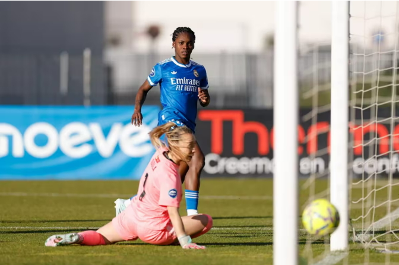
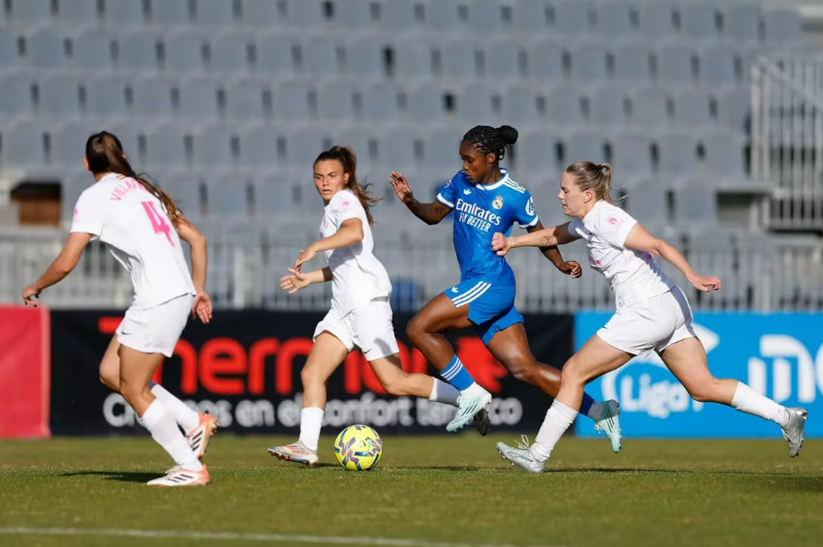

En un escenario donde la presión pesaba más que el balón, apareció el talento y la personalidad de Linda Caicedo para cambiar la historia. La caleña, con una actuación determinante, lideró la victoria 0-2 del Real Madrid Femenino sobre el Madrid CFF en la jornada 25 de la Liga F, devolviéndole el alma a un equipo golpeado y reafirmando su momento estelar en España. El encuentro, disputado en el estadio Fernando Torres, no fue sencillo. De hecho, durante la primera mitad el conjunto local tomó la iniciativa y generó las aproximaciones más claras, incluida una acción en el tiempo añadido con un disparo de Melgard que se marchó desviado.
Primer tiempo cerrado y sin claridad
El inicio mostró a un Madrid CFF decidido a incomodar. Con presión alta y llegadas constantes, puso en aprietos al equipo dirigido por Pau Quesada, que tardó en asentarse.
Aunque el Real Madrid Femenino logró equilibrar el juego con el paso de los minutos, no consiguió traducir ese dominio en ocasiones claras. La sensación era de un partido trabado, con pocas ideas en los metros finales.

Golazo de Linda y cambio total del partido
Pero todo cambió tras el descanso. Apenas iniciada la segunda mitad, Linda Caicedo rompió el libreto. En el minuto 48, tras una pared con Athenea del Castillo, la colombiana se internó en el área y definió con un disparo raso para el 0-1.
La acción no solo abrió el marcador, sino que transformó el ánimo del equipo. Caicedo, de 21 años, mostró su velocidad, desequilibrio y categoría en una jugada que marcó el punto de inflexión del compromiso. Para la caleña fue su cuarto gol en 20 partidos disputados en esta temporada de la liga F donde ya suma 12 anotaciones en total.
"Sabíamos que era un momento difícil para el equipo, pero Linda tiene esa capacidad de cambiar partidos con una sola jugada. Su gol no solo abrió el marcador, también nos devolvió la confianza y la identidad que necesitábamos en la cancha."
— Alberto Toril, entrenador del Real Madrid Femenino

Una victoria que vale más que tres puntos
El triunfo no solo suma en la tabla. También representa un respiro emocional para un equipo que venía golpeado y que encontró en Linda Caicedo a su gran líder para reconectarse con la victoria.
En un momento clave de la temporada, la colombiana no solo marcó un gol: marcó el camino.
Con este resultado, el Real Madrid Femenino no solo recupera terreno en la Liga F, sino que también refuerza su confianza de cara a los próximos desafíos. El liderazgo y la determinación de Linda Caicedo siguen consolidándola como una pieza clave en el equipo, demostrando que está lista para asumir un papel protagónico en los momentos más decisivos de la temporada.